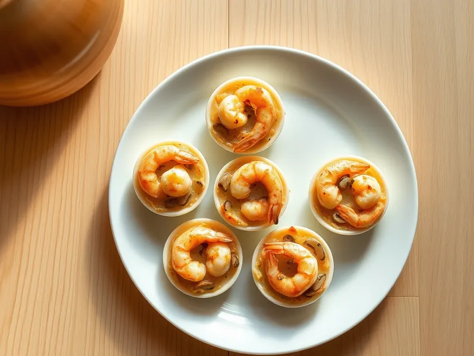

Жюльен с креветками и грибами
Креветки и шампиньоны в сливочном соусе, запечённые под сыром
30 мин3 порц.395 ккал на порциюБ 31 · Ж 27 · У 8Русская кухня
Открыть в приложении: порции, таймеры, список покупок
Продукты на 3 порц.
- Креветки300 г
- Шампиньоны200 г
- Сливки 20%150 мл
- Сыр твёрдый80 г
- Лук репчатый1 шт
- Мука пшеничная1 ст. л.
- Сливочное масло25 г
- Соль1 щеп.
- Перец чёрный молотый1 щеп.
Как готовить
- Включите духовку на 200 °C (сильный жар). Разморозьте и очистите креветки.
- Нарежьте лук мелко, грибы тонкими пластинками. Обжарьте их на сливочном масле на среднем огне 7 минут, пока сок не выпарится.
- Всыпьте муку, перемешайте 1 минуту, влейте сливки и варите помешивая 2 минуты до загустения, посолите и поперчите.
- Добавьте креветки, перемешайте и разложите массу по кокотницам или небольшим формочкам.
- Посыпьте тёртым сыром и запекайте 10 минут до румяной сырной корочки.
Совет. Крупные креветки разрежьте пополам, чтобы в каждой ложке был кусочек.